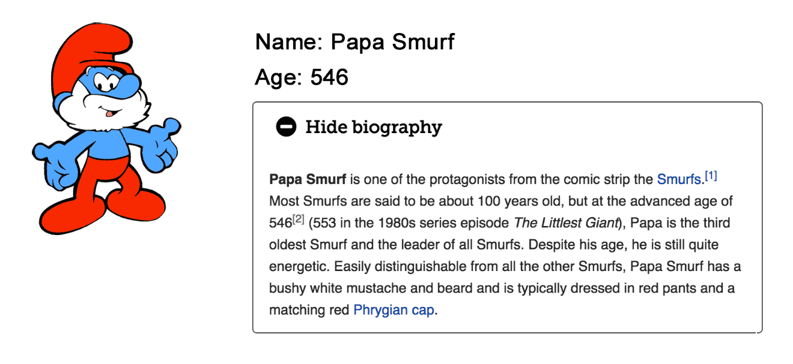

Or, “unit testing of UI code is overrated”
This article is about how to make UI code reliable. By reliable I mean free from bugs. This implies that the software must also be maintainable, which is to say that you can easily add new features without also adding new bugs. By UI code I mean code that accepts input from users and displays results. In a modern JavaScript-powered web application, a lot of business logic is moved into the browser. For example, an online chess game may have a virtual opponent that can play against you, choosing the best move to make on each turn. Silly as it may sound to refer to chess as business, the code for this virtual opponent is “business logic” rather than UI, and you should probably unit test the shit out of it. UI code covers things like providing feedback as a player drags their chess piece across the board.
There’s something of a testing religion in software development. Mostly this is a Good Thing – unit tests are probably the most important tool for building reliable software. In this article I argue that in the context of UI development, there are better techniques for achieving reliability.
Part 1: why unit tests don’t work on UI code
This is an article about building reliable UIs, but I’m going to spend the first half of the article on my claim that unit tests are not a good tool for this purpose. This says something about the position of unit testing in software development – to many people, unit testing is synonymous with reliability. In fact my motivation for writing this article is that I’ve worked on a couple of projects where the business considered reliability of the product to be even more important than usual, and this was translated directly into a requirement to unit test more than usual, without much apparent consideration of the alternatives. If you’re more interested in positive advice then you may want to skip to part 2.
The warm fuzzy feeling of comprehensive tests
First off, let’s acknowledge that there is a good reason for unit testing being popular: in some contexts, such tests are necessary and sufficient for building a bug free program. Necessary because they are the most effective tool for getting rid of bugs; sufficient because tests alone are pretty much all you need.
Some programs, especially those that run server-side in a web application, can be specified entirely in terms of input and output. A specification for a REST API server might consist of sentences like this: When a POST request is made to /api/smurfs with a valid JSON-encoded Smurf in the request body, the Smurf should be persisted to the data store and a 200 OK response returned with the new Smurf’s database ID as the response body. This translates *very* well into a unit test:
function api_should_create_a_new_smurf(api, backend) { let smurf = { name: "Papa Smurf", age: 546, biography: "https://en.wikipedia.org/wiki/Papa_Smurf" }; let response = api.smurfs.handlePost(papaSmurf); expect(response.status).to.be(200); expect(response.body).to.be.a.number; expect(backend.getSmurf(response.body).to.equal(smurf); } |
Further test cases may stipulate what is expected when an invalid Smurf is provided, or when the data store is unavailable. When you have a test for every important aspect of the system, you get the warm fuzzy feeling of comprehensive tests. This is the confidence that you can work freely on any part of the software, knowing that if you accidentally break something then the tests will alert you.
This is important stuff – it’s the kind of thing that makes the difference between success and failure for the project, or between happiness and irritation for your developers.
Why UIs can’t be comprehensively tested
Servers are interfaces designed to be used by machines, and so it makes sense that machines are good at testing them. The Smurf API above can be specified in terms of data in and data out. If the input reliably produces the expected output, the server is working, end of story. UIs on the other hand are used by humans, which makes them literally impossible for a machine to test properly. The input to a UI is human intention and the output is human understanding. The only way to test this, at least with current technology, is to have a human do it.
Let me illustrate this with an example. Say we’ve got this UI:
Clicking the + icon expands the biography and changes the plus sign to a minus:

The test for whether this feature is working is that when a human attempts to click the biography button, the human can read the biography. The closest that a unit test can get to this is something like this:
function smurf_biography_should_expand(browser) { // assume that browser is a selenium object that // remote-controls a real web browser let page = browser.navigateTo(SMURF_VIEW_PAGE); let bio = page.findElement("#biography"); let bioButton = page.findElement("#biography-toggle-btn"); expect(bioButton).to.containText("Show biography"); expect(bio.style.visibility).to.be("hidden"); bioButton.click(); expect(bioButton).to.containText("Hide biography"); expect(bio.style.visibility).to.be("visible"); } |
This test is not very useful for two reasons.
1. If a UI test passes, it doesn’t mean that the feature works. In principle this is true of all tests – even in well tested server-side code there could always be edge cases where a feature sometimes fails even though all of its tests pass. But UIs are special in that the tests can pass and the feature still be totally, 100% broken all of the time.
This can happen at either the input or output end, when something goes wrong in the gap between what humans and machines are capable of testing. At the input end, the line bioButton.click(); will tend to work even if a real human could not click the button. For example the Smurf photo may be wrapped in a full width container with a transparent background that extends over the button, so that when you try to click the button with a mouse you click the photo container instead. The browser automation tool however is just looking up elements by ID and issuing virtual clicks on them, so isn’t tripped up by this. At the output end, the test verifies that the CSS visibility property has the correct value, not that the eye can see all the right pixels on the screen. Perhaps the biography element has a fixed height so even though the content is shown, it is cropped off and you can only read the first couple of lines.
The end result is that no matter how many unit tests you have, you will never achieve the warm fuzzy feeling of comprehensive tests.
2. The stuff in a UI that can be tested, usually isn’t worth testing. Behind a requirement like “clicking the ‘Show biography’ button expands the biography text” there are tens of tiny requirements, some visible in the design mockup, others implicit: the text should be entirely visible; the icon and button label should be different in the expanded state; if the text is too long it should probably scroll rather than extending off the bottom of the page; the padding around the text should be consistent with the rest of the design; the animation used to expand the text should be consistent with the animations elsewhere; etc etc. In general these sub-features are trivial to implement (anywhere from a single HTML attribute to a few of lines of code), easy to test manually, and isolated (adding or changing one feature is unlikely to break others).
Certain sub-features such as the changing of the button label are easy to test automatically. Others such as the smoothness of the animation are difficult or impossible to test.
Some people advocate testing what can be tested, on the grounds that some tests are better than none. I take the view that this gives a false sense of security, and that it’s better to be consistent: test none of these sub-features, and focus on other techniques for making reliable UIs.
Part 2: How to build reliable UIs
Fear not! The good news is that it is possible to write reliable UI programs. Automated testing has a role to play, but it isn’t nearly as important as in server-side development.
These are the techniques that I’ve found useful for building more reliable UIs, in no particular order. The list may grow over time and is biased towards web applications because that’s what I’ve been working on recently.
Have a reliability strategy
Explicitly recognise reliability as a non-functional requirement of your software, like performance. Decide what techniques you’re going to use to encourage reliability, then ensure that the whole team is up to speed with the decision.
The list of techniques in the remainder of this article is a good place to start. For each technique, analyse the cost and benefit for your specific project, then decide whether and how to adopt it.
Good old fashioned software craftsmanship
Well written software is less likely to contain hidden bugs, and easier to change later without introducing new bugs. This is, after all, how software was created back in the 20th century before Kent Beck made unit testing popular. Whole books have been written on this topic so I can’t even scratch the surface here, but all of the classic rules of thumb for how to write good software are even more important in UI code: write short methods that do one thing well; use a consistent coding style; use carefully chosen, descriptive method and variable names; avoid code duplication, prefer simple self-explanatory code to comments, but use comments when this isn’t possible; split features into independent modules with a clearly defined interface between then; avoid shared mutable state; etc etc. This kind of stuff may be best learned over a career of learning from mistakes, but a Google for “software engineering best practices” brings up plenty of lists.
When a sufficiently experienced developer is making a product on their own, they can simply decide to employ good software craftsmanship. In a team, good craftsmanship does not simply happen as a result of hiring good developers – it requires the right leadership and culture. Again, many books have been written on this topic, but some of the important aspects are: designing and communicating coding standards; reading each others code (preferably in a more peer-to-peer manner than the term “code review” implies); sharing expertise; collaborative design; and pair programming.
Automated unit tests
Having spent all that time bashing unit tests, I’ll back-pedal a bit.
Sometimes you will find that it is simply easier to develop a bit of code using test-driven development than with manual testing. In this case, it’s a no brainer: writing unit tests saves you time, and gets you the benefit of unit testing for free.
Other times you may feel that a bit of code you have to write is particularly fiddly or error prone. Your first thought here should be to change your coding patterns so that you don’t have to write fiddly or error prone code. But sometimes you’re using a framework that has great benefits, but requires a bit of fiddly coding (Redux reducers I’m looking at you) so you appreciate the warm fuzzy feeling of comprehensively testing that little bit of the code base.
Component development harnesses
One of the main benefits of unit tests is that they force your code to be modular by making dependencies clear. Each unit test is an isolated environment which creates a new instance of the class and provides it with any dependencies that it needs. If a class has many dependencies then it will be hard to write tests for it, and this encourages the developer to organise the system to minimise dependencies between classes, making the code base more maintainable.
The equivalent for visual components is a development harness. Say you’re developing a drop-down menu component. The development harness for this will be a screen populated with multiple instances of the menu component with different settings, styles and data. As you develop the component and it grows in complexity, you add more instances to the development harness just as you would add tests to the test suite of a non-visual component. When you’re doing any major work on the component, you do so in the development harness rather than in the application. This makes you more productive because it’s faster to make code changes and see their effect. It also enforces modularity – because your component must be capable of running in both the application and the development harness, it must be a standalone component.
Strongly typed JavaScript
JavaScript is a dynamic language, so certain errors aren’t discovered until the program runs. A bit of code that looks right – alert("Hello " + user.name) – may be broken because the user object has no name field, only firstname and lastname. This error could appear in previously working code if user object is refactored but not all of the code using said object is updated. One argument for extensive unit testing is that tests will find these errors, but static type checking is a better way of achieving the same goal.
TypeScript and Flow are both excellent static type checkers for JavaScript. Personally I use TypeScript. They eliminate a whole class of errors, and make editing much more productive and enjoyable by underlining errors and autocompleting names as you type.
Use architecture that encourages modularity
There are several different techniques relevant here that generally come under Inversion of Control, also known as the Hollywood Principle: “don’t call us, we’ll call you”. Components should not reach outside their bounds and interact with the rest of the system. Instead they should have dependencies provided through dependency injection and signal actions by dispatching events.
For example, when designing a UI it may be the case that when the user clicks “save” then the model saves itself to the server. Neither model nor button should know about each other. Instead the button should dispatch a “request save” event onto a central event bus which is picked up by the model and triggers it to save. This gives you flexibility to add new features – such as auto-save every few minutes or a loading spinner that notifies the user when the document is saving – without having to change the existing components.
Split code into declarations and engines
When you can’t comprehensively test part of a program, it’s particularly important that the code be simple, readable, and it’s function self-evident. A really powerful tool for achieving this is to split the code into declarations and engines.
The declaration is a data structure that specifies exactly what you’re trying to achieve, with no implementation details. The engine is code that interprets this data structure and makes it so.
A good example of this is the Django forms system. A form is defined in one place as a class:
class NameForm(forms.Form): name = forms.CharField(label='Your name', max_length=100); bmu = forms.BooleanField(label='Beam me up?', required=False); |
This data structure is used by engine code in several places: on the server to generate the form HTML that is sent to the browser; in the browser by JavaScript to provide immediate validation; and back on the server to securely validate submitted responses.
The Declaration/engine pattern works best when the engine is provided by a well designed and documented framework like Django, in which case you don’t have to write any of the engine code. But if there’s no framework available for your use case, it’s easy enough to write your own. Be aware however that there is a cost: new developers need to learn the declaration format before they can use it, so it’s only worth doing if you’re going to make significant use of it.
Use best-of-breed frameworks that smooth over browser inconsistencies
Frameworks like React, Angular, Bootstrap and jQuery are indispensable for building modern web apps. They’re most often thought of as tools to increase productivity or encourage modular architecture, but much of their value lies in the way that they present a consistent API over browser features.
If you add a change event handler to a <select> (dropdown) element using JavaScript, the results will be inconsistent. Some browsers will dispatch the change event when a new item is selected, others only when the user defocusses the select control. In some browsers the change event will bubble, in others it will not. And there are probably more inconsistencies that I don’t know about. The popular frameworks mentioned above are full of special cases for specific browsers, and they’ve been tested and refined by thousands of contributions to make sure that some obscure DOM bug in the latest WiFi-enabled fridge from Samsung isn’t going to cause a bug in your application.
Automated smoke tests
Smoke tests are high-level tests on the full running software that check that most of the important features seem to be working. For a browser-based UI application they’re typically written using a browser remote-control tool like Selenium. The difference between smoke tests and unit, integration or acceptance tests is that a smoke test doesn’t aim to prove that the system is working exactly as specified, jut that it is working at all.
The great thing about smoke tests is that a little goes a really long way. You describe a few simple paths through your application, for example: log in, add a new Smurf, find the new Smurf on the search page, view the new Smurf’s biography, remove the smurf, log out. This test would only take a couple of hours to write if you’re already familiar with Selenium, but if it passes it tells you that all major parts of the application are working – the JavaScript doesn’t have any fatal errors, the application server has started up, the database connection is working, etc etc.
A smoke test is a useful thing to run straight after a build to check that the build works. But it’s also something that you can point at staging or production systems. You could even run it on a schedule every hour, as a more advanced version of a “ping” to check server uptime.
Client-side error collection
Client-side error collection involves putting code in your app to detect errors that happen on the user’s computer and alert you to them. You can do it yourself by listening to the window.onerror event, or subscribe to a service like Raygun, Sentry or errorception.
These work so well because they change the economics of bugs that get past QA. Say there’s a bug that only happens on Firefox Mobile, and that isn’t one of the browsers you test on. Without client-side error collection, Firefox Mobile users just know that your site doesn’t work, and either go elsewhere or get a little annoyed and switch to another browser. With client-side error collection, you get notified of the bug and can fix it after only having irritated a few users.
These services only catch JavaScript errors in web applications, not other kinds of errors like images that fail to load. But JavaScript errors are often the most damaging as they will entirely break a feature rather than just make it look a bit off.
Manual testing
Some degree of manual testing is usually a good idea for most software projects.
Traditionally, “manual testing” means that either you, or another team member, or a 3rd party company, goes through every possible permutation of every feature trying to find bugs. Because the person doing the testing doesn’t have specialist knowledge required to recognise intuitively if a feature is broken, they need a document telling them how to test. This is called a Testing Procedure Specification, and was immortalised in the film Office Space as the emblem of tedious drudge-work in a software company.
A much more pleasant version of manual testing is Dogfooding: the practice of using pre-release versions of your own software internally. Obviously this only works if your company makes a product that it has need of itself. You can’t dogfood nuclear power plant control software. But if you’re making a project management app, most of your staff can manually test your software just by going about their day-to-day work. This also has the benefit of making sure that your staff are aware of the latest developments in your software.
User testing
User testing is normally thought of as a tool for polishing UX design, not for finding bugs. But as far as users are concerned there is no distinction line between a minor technical bug and a UX issue – both get in the way of the task they’re trying to perform. And because user testing is best done on early prototype software, the process of user testing sometimes uncovers new technical bugs.
The most effective kind of user testing involves inviting test subjects to go through a list of tasks in the software, talking out loud about their thought process as they go.
User feedback
Finally, when all of the above techniques fail to stop a bug or UX issue from getting into production software, make sure that users have an easy way to report bugs and give suggestions. At a minimum, give an email address that reports can be sent to. Much better is to use a feedback tool like Usersnap which can take a screenshot of the page and automatically record information like the browser and operating system in use.
The end…
Have I missed anything out? What are your favourite techniques for making reliable UIs? Feel free to leave a comment with your own preferred techniques for making reliable UIs, or email me on bernie@berniecode.com.